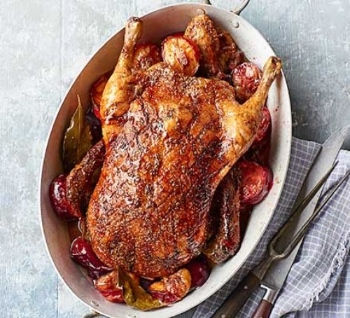
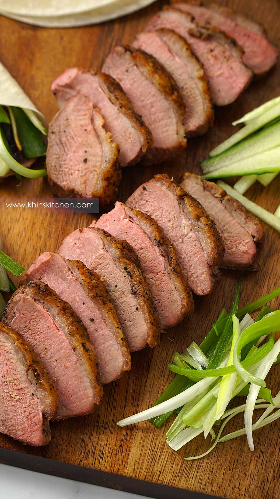

Roast Duck

Description
Roasting a duck is nothing to be afraid of. As long as you
have a few hours and some patience, we will have you pulling
your first roasted duck out the oven like its nothing.
Timing
To Roast a duck, you must first know it's weight. For each
kilogram of duck you have, it will need 40 minutes, plus
an additional 10 minutes in the oven.
Below we have a breakdown of some example cooking times:
- 1kg: 50 mins.
- 1.3kg: 62 mins.
- 1.7kg: 78 mins.
- 2.5 kg: 110 mins.

Seasoning
Seasoning your duck should be simple, just salt and pepper
will really bring out the flavours of the duck. However, we
recommend getting a selection of your favourite vegetables
to surround the bird as it roasts.
Ingredients
- Duck.
- Your favourite vegetables (we like onions,
carrots, squash and garlic).
- Pinch Salt.
- Pinch Pepper.
Steps
- Pre-heat your oven to 180 C, fan, or 200 C, conventional.
- Pat dry your bird, removing excess moisture.
- Prick the skin of the duck with a sharp knife or fork.
- Rub your salt and pepper over the duck's skin and then place
the bird into your roasting tin.
- Fill the remainder of the tin with your choice of vegtables and then
put the tin into the middle of your oven
- Once your duck is cooked according to the chart above, remove it
from the oven and let it rest for 10-20 mins.
- While you're waiting, plate up your vegetables and why not have a go at
making our deliciousgravy
- Serve and enjoy!